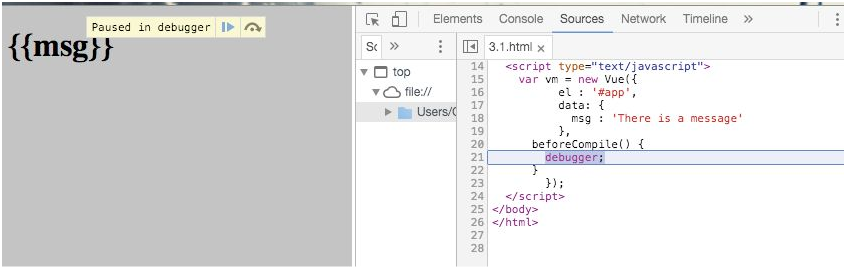

3.1.6 v-text
v-text，参数类型为String，作用是更新元素的textContent。{{}}文本插值本身也会被编译成textNode的一个v-text指令。而与直接使用{{}}不同的是，v-text需要绑定在某个元素上，能避免未编译前的闪现问题。例如：
<span v-text="msg"></span>
如果直接使用<span>{{msg}}</span>，在生命周期beforeCompile期间，此刻msg数据尚未编译至中，用户能看到一瞬间的{{msg}}，然后闪现为There is a message，而用v-text的话则不会有这个问题
如图所示：
